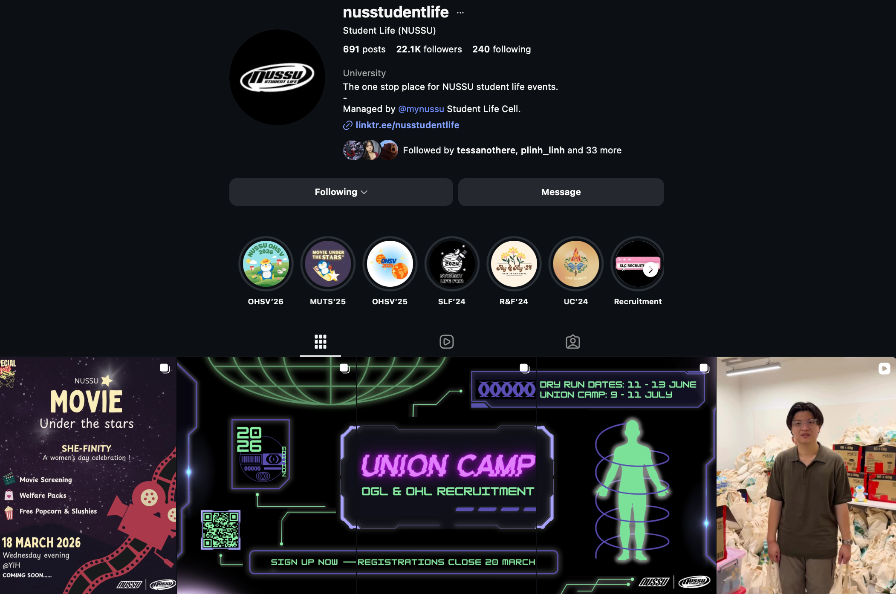
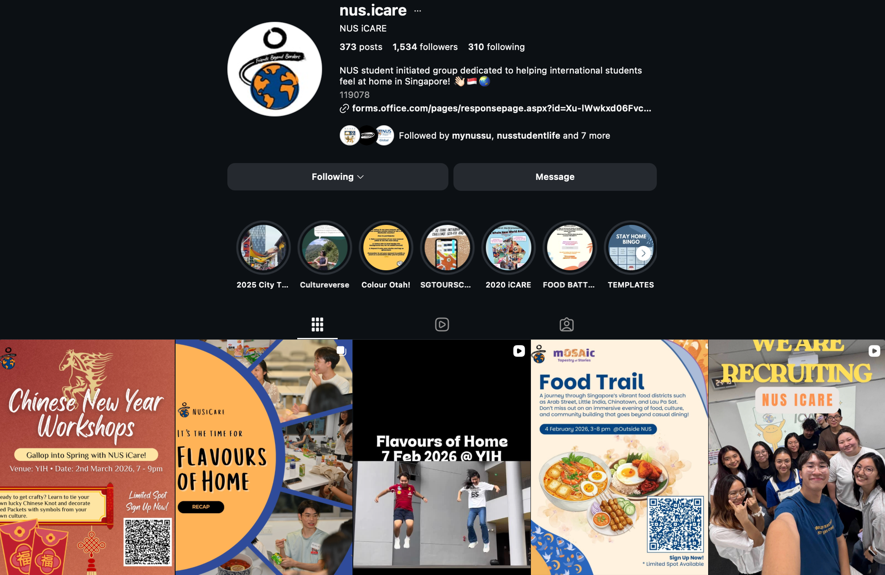

Education
Bachelor of Commerce, University of Sydney, Australia
- Majors: Finance & Business Analytics (Double Majors)
- Graduation Date: December 2027
- WAM: Distinction
Data Analytics Projects
Statistical Data Analysis Project – Relationship Satisfaction Study (Australia)
This project analysed a national survey dataset (n=700) to investigate determinants of relationship satisfaction in Australia. Using statistical tools such as descriptive analysis, hypothesis testing, and regression modelling, the study explored how demographic and lifestyle variables (e.g., migration status, urban vs rural living, and relationship duration) relate to satisfaction. The aim was to identify key predictors of relationship satisfaction and provide data-driven insights.
Financial Projects
Equity Valuation Analysis
This project involved conducting an equity research analysis of Super Retail Group Ltd. (ASX:SUL), an Australian retail company operating brands such as Supercheap Auto, Rebel, BCF, and Macpac. Using financial valuation tools including the Dividend Discount Model (DDM), Capital Asset Pricing Model (CAPM), sensitivity analysis, and comparable company multiples, the analysis evaluated the company’s intrinsic value based on publicly available financial data. The project aimed to assess the firm’s valuation and investment attractiveness and provide a data-supported investment recommendation for the stock.
Strategic Analysis and Business Model Evaluation
This project analysed the business strategy of Fair Trade Jewelry Co. to evaluate its competitive positioning and growth opportunities in the sustainable luxury market. Using strategic frameworks including the Strategy Diamond and Business Models, the analysis examined the firm’s value proposition, supply chain, customer segments, and ESG practices. The project aimed to assess how sustainability, innovation, and ethical sourcing contribute to the company’s competitive advantage and to develop strategic recommendations to support scalable growth while maintaining its social and environmental mission.
Case Study Competition
Strategic Consulting Analysis for MadeMealCo
This project analysed the strategic challenges faced by MadeMealCo, focusing on high customer churn and supply chain costs in the meal-kit industry. Using market analysis and operational cost evaluation, the project proposed strategies such as loyalty programs, personalised menus, and supply chain optimisation to improve customer retention and profitability.
Integrated Marketing Campaign Strategy
This project developed an integrated marketing strategy for NESCAFÉ Espresso Concentrate to reposition the brand among Gen Z consumers. Using market trend analysis, customer segmentation, and IMC planning, the project proposed digital campaigns, influencer collaborations, and experiential activations to embed the product into Gen Z’s productivity and social rituals.
Market Strategy Analysis
This project analysed the market adoption potential of InsightED, an AI-powered educational platform designed to support teachers working with neurodiverse learners. Using market analysis, competitor benchmarking, and pricing strategy evaluation, the project identified key market segments, adoption barriers, and pricing models to support large-scale implementation across schools and early childhood education centres.
Leadership Activities
AIESEC - Business Development Executive
International Association of Students in Economics and Business
Delivering educational sessions to primary and secondary school students in Sydney on the United Nations Sustainable Development Goals (SDGs) and global citizenship principles. Also organised career panels and professional development workshops for university students to connect them with industry insights and leadership opportunities.


Scroll horizontally to view more photos.
National University of Singapore Student Union - Public Relations
Led outreach and public relations initiatives for the NUS Open Day, collaborating with the National University of Singapore to organise programmes and activities for prospective students. Managed stakeholder outreach, coordinated event programming, and supported the execution of an open day event that attracted 2,000+ visitors to the university.



Scroll horizontally to view more photos.
NUSiCare - Finance Manager
Organising fundraising events and securing sponsorships to support international students at the university. Managed event budgets, coordinated sponsor outreach, and helped raise funds for student welfare and community support programmes.



Scroll horizontally to view more photos.
Asia-Australia Youth Association - Careers Associate
Conducted outreach with companies and HR/talent acquisition teams to create career opportunities for university students. Coordinated industry networking events, company office visits, and internship programmes to connect students with employers and strengthen university–industry engagement.